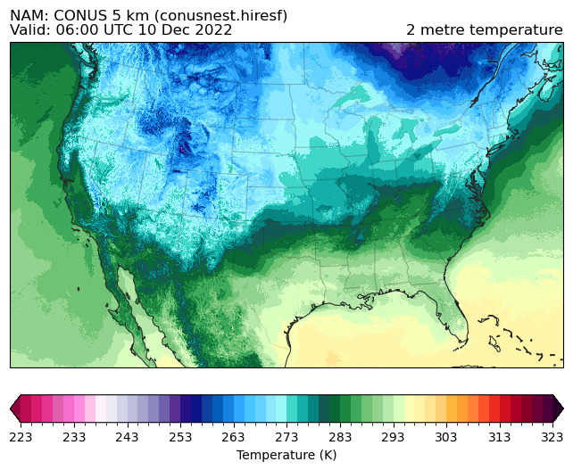
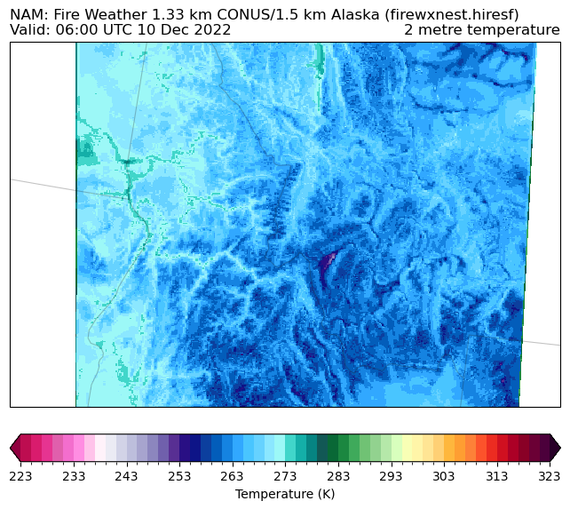

NAM Data#
This tutorial shows you how to download NAM data from Amazon (and other sources) with the Herbie Python package.
[1]:
from herbie import Herbie
from toolbox import EasyMap, pc
from paint.standard2 import cm_tmp
import matplotlib.pyplot as plt
import cartopy.crs as ccrs
[8]:
H = Herbie("2022-12-10", model="nam", fxx=6)
✅ Found ┊ model=nam ┊ product=conusnest.hiresf ┊ 2022-Dec-10 00:00 UTC F06 ┊ GRIB2 @ aws ┊ IDX @ aws
[9]:
H.PRODUCTS
[9]:
{'conusnest.hiresf': 'CONUS 5 km',
'firewxnest.hiresf': 'Fire Weather 1.33 km CONUS/1.5 km Alaska',
'alaskanest.hiresf': 'Alaska 6 km',
'hawaiinest.hiresf': 'Hawaii 6 km',
'priconest.hiresf': 'Puerto Rico 3 km',
'afwaca': 'Central America/Caribbean'}
[10]:
ds = H.xarray("TMP:2 m above")
ds
👨🏻🏭 Created directory: [C:\Users\blaylock\data\nam\20221210]
C:\Users\blaylock\_GITHUB\Herbie\herbie\archive.py:1041: UserWarning: sorry, on windows I couldn't remove the file.
warnings.warn("sorry, on windows I couldn't remove the file.")
[10]:
<xarray.Dataset>
Dimensions: (y: 1059, x: 1799)
Coordinates:
time datetime64[ns] 2022-12-10
step timedelta64[ns] 06:00:00
heightAboveGround float64 2.0
latitude (y, x) float64 21.14 21.14 21.15 ... 47.86 47.85 47.84
longitude (y, x) float64 237.3 237.3 237.3 ... 299.0 299.0 299.1
valid_time datetime64[ns] 2022-12-10T06:00:00
Dimensions without coordinates: y, x
Data variables:
t2m (y, x) float32 292.3 291.9 292.2 ... 275.6 275.6 275.8
gribfile_projection object None
Attributes:
GRIB_edition: 2
GRIB_centre: kwbc
GRIB_centreDescription: US National Weather Service - NCEP
GRIB_subCentre: 0
Conventions: CF-1.7
institution: US National Weather Service - NCEP
model: nam
product: conusnest.hiresf
description: North America Mesoscale - CONUS
remote_grib: https://noaa-nam-pds.s3.amazonaws.com/nam.202212...
local_grib: C:\Users\blaylock\data\nam\20221210\subset_22b2c...
searchString: TMP:2 m above[11]:
ax = EasyMap("50m", crs=ds.herbie.crs, figsize=[8, 8]).STATES().ax
p = ax.pcolormesh(
ds.longitude, ds.latitude, ds.t2m, transform=pc, **cm_tmp(units="K").cmap_kwargs
)
plt.colorbar(
p, ax=ax, orientation="horizontal", pad=0.05, **cm_tmp(units="K").cbar_kwargs
)
ax.set_title(
f"{ds.model.upper()}: {H.product_description} ({H.product})\nValid: {ds.valid_time.dt.strftime('%H:%M UTC %d %b %Y').item()}",
loc="left",
)
ax.set_title(ds.t2m.GRIB_name, loc="right")
[11]:
Text(1.0, 1.0, '2 metre temperature')

Additional products#
[12]:
def plot_product(product):
H = Herbie("2022-12-10", model="nam", fxx=6, product=product)
ds = H.xarray("TMP:2 m above")
ax = EasyMap("50m", crs=ds.herbie.crs, figsize=[8, 8]).STATES().ax
p = ax.pcolormesh(
ds.longitude, ds.latitude, ds.t2m, transform=pc, **cm_tmp(units="K").cmap_kwargs
)
plt.colorbar(
p, ax=ax, orientation="horizontal", pad=0.05, **cm_tmp(units="K").cbar_kwargs
)
ax.set_title(
f"{ds.model.upper()}: {H.product_description} ({product})\nValid: {ds.valid_time.dt.strftime('%H:%M UTC %d %b %Y').item()}",
loc="left",
)
ax.set_title(ds.t2m.GRIB_name, loc="right")
return H, ds, ax
[13]:
H.PRODUCTS.keys()
[13]:
dict_keys(['conusnest.hiresf', 'firewxnest.hiresf', 'alaskanest.hiresf', 'hawaiinest.hiresf', 'priconest.hiresf', 'afwaca'])
[14]:
H, ds, ax = plot_product("conusnest.hiresf")
✅ Found ┊ model=nam ┊ product=conusnest.hiresf ┊ 2022-Dec-10 00:00 UTC F06 ┊ GRIB2 @ aws ┊ IDX @ aws

[15]:
H, ds, ax = plot_product("firewxnest.hiresf")
✅ Found ┊ model=nam ┊ product=firewxnest.hiresf ┊ 2022-Dec-10 00:00 UTC F06 ┊ GRIB2 @ aws ┊ IDX @ aws
C:\Users\blaylock\_GITHUB\Herbie\herbie\archive.py:1041: UserWarning: sorry, on windows I couldn't remove the file.
warnings.warn("sorry, on windows I couldn't remove the file.")

[16]:
H, ds, ax = plot_product("alaskanest.hiresf")
✅ Found ┊ model=nam ┊ product=alaskanest.hiresf ┊ 2022-Dec-10 00:00 UTC F06 ┊ GRIB2 @ aws ┊ IDX @ aws
C:\Users\blaylock\_GITHUB\Herbie\herbie\archive.py:1041: UserWarning: sorry, on windows I couldn't remove the file.
warnings.warn("sorry, on windows I couldn't remove the file.")

[17]:
# NOTE: Weirdness with Hawaii not returning as a grid, but as a line
# NOTE: NEEDS TO BE RESHAPED
H, ds, ax = plot_product("hawaiinest.hiresf")
✅ Found ┊ model=nam ┊ product=hawaiinest.hiresf ┊ 2022-Dec-10 00:00 UTC F06 ┊ GRIB2 @ aws ┊ IDX @ aws
C:\Users\blaylock\_GITHUB\Herbie\herbie\archive.py:1041: UserWarning: sorry, on windows I couldn't remove the file.
warnings.warn("sorry, on windows I couldn't remove the file.")
---------------------------------------------------------------------------
ValueError Traceback (most recent call last)
Cell In[17], line 4
1 # NOTE: Weirdness with Hawaii not returning as a grid, but as a line
2 # NOTE: NEEDS TO BE RESHAPED
----> 4 H, ds, ax = plot_product("hawaiinest.hiresf")
Cell In[12], line 7, in plot_product(product)
4 ds = H.xarray("TMP:2 m above")
6 ax = EasyMap("50m", crs=ds.herbie.crs, figsize=[8, 8]).STATES().ax
----> 7 p = ax.pcolormesh(
8 ds.longitude, ds.latitude, ds.t2m, transform=pc, **cm_tmp(units="K").cmap_kwargs
9 )
10 plt.colorbar(
11 p, ax=ax, orientation="horizontal", pad=0.05, **cm_tmp(units="K").cbar_kwargs
12 )
14 ax.set_title(
15 f"{ds.model.upper()}: {H.product_description} ({product})\nValid: {ds.valid_time.dt.strftime('%H:%M UTC %d %b %Y').item()}",
16 loc="left",
17 )
File c:\Users\blaylock\Miniconda3\envs\herbie-dev\lib\site-packages\cartopy\mpl\geoaxes.py:318, in _add_transform.<locals>.wrapper(self, *args, **kwargs)
313 raise ValueError(f'Invalid transform: Spherical {func.__name__} '
314 'is not supported - consider using '
315 'PlateCarree/RotatedPole.')
317 kwargs['transform'] = transform
--> 318 return func(self, *args, **kwargs)
File c:\Users\blaylock\Miniconda3\envs\herbie-dev\lib\site-packages\cartopy\mpl\geoaxes.py:1784, in GeoAxes.pcolormesh(self, *args, **kwargs)
1773 """
1774 Add the "transform" keyword to :func:`~matplotlib.pyplot.pcolormesh`.
1775
(...)
1780
1781 """
1782 # Add in an argument checker to handle Matplotlib's potential
1783 # interpolation when coordinate wraps are involved
-> 1784 args, kwargs = self._wrap_args(*args, **kwargs)
1785 result = super().pcolormesh(*args, **kwargs)
1786 # Wrap the quadrilaterals if necessary
File c:\Users\blaylock\Miniconda3\envs\herbie-dev\lib\site-packages\cartopy\mpl\geoaxes.py:1813, in GeoAxes._wrap_args(self, *args, **kwargs)
1811 X = np.asanyarray(args[0])
1812 Y = np.asanyarray(args[1])
-> 1813 nrows, ncols = np.asanyarray(args[2]).shape
1814 Nx = X.shape[-1]
1815 Ny = Y.shape[0]
ValueError: not enough values to unpack (expected 2, got 1)

[ ]:
ds = Herbie("2022-08-10", model="nam", product="hawaiinest.hiresf").xarray("TMP:2 m")
ds
✅ Found ┊ model=nam ┊ product=hawaiinest.hiresf ┊ 2022-Aug-10 00:00 UTC F00 ┊ GRIB2 @ aws ┊ IDX @ aws
<xarray.Dataset>
Dimensions: (values: 72225)
Coordinates:
time datetime64[ns] 2022-08-10
step timedelta64[ns] 00:00:00
heightAboveGround float64 2.0
latitude (values) float64 18.07 18.07 18.07 ... 23.09 23.09
longitude (values) float64 198.5 198.5 198.5 ... 206.1 206.1
valid_time datetime64[ns] 2022-08-10
Dimensions without coordinates: values
Data variables:
t2m (values) float32 299.8 299.8 299.8 ... 299.0 299.0
gribfile_projection object None
Attributes:
GRIB_edition: 2
GRIB_centre: kwbc
GRIB_centreDescription: US National Weather Service - NCEP
GRIB_subCentre: 0
Conventions: CF-1.7
institution: US National Weather Service - NCEP
model: nam
product: hawaiinest.hiresf
description: North America Mesoscale - CONUS
remote_grib: https://noaa-nam-pds.s3.amazonaws.com/nam.202208...
local_grib: /p/cwfs/blaylock/data/nam/20220810/subset_93f271...
searchString: TMP:2 m[18]:
plt.scatter(ds.longitude, ds.latitude, ds.t2m, c=ds.t2m, marker=".")
[18]:
<matplotlib.collections.PathCollection at 0x26fb0ee5690>

[19]:
# NOTE: Weirdness with Puerto Rico not returning as a grid, but as a line
H, ds, ax = plot_product("priconest.hiresf")
✅ Found ┊ model=nam ┊ product=priconest.hiresf ┊ 2022-Dec-10 00:00 UTC F06 ┊ GRIB2 @ aws ┊ IDX @ aws
C:\Users\blaylock\_GITHUB\Herbie\herbie\archive.py:1041: UserWarning: sorry, on windows I couldn't remove the file.
warnings.warn("sorry, on windows I couldn't remove the file.")
---------------------------------------------------------------------------
ValueError Traceback (most recent call last)
Cell In[19], line 3
1 # NOTE: Weirdness with Puerto Rico not returning as a grid, but as a line
----> 3 H, ds, ax = plot_product("priconest.hiresf")
Cell In[12], line 7, in plot_product(product)
4 ds = H.xarray("TMP:2 m above")
6 ax = EasyMap("50m", crs=ds.herbie.crs, figsize=[8, 8]).STATES().ax
----> 7 p = ax.pcolormesh(
8 ds.longitude, ds.latitude, ds.t2m, transform=pc, **cm_tmp(units="K").cmap_kwargs
9 )
10 plt.colorbar(
11 p, ax=ax, orientation="horizontal", pad=0.05, **cm_tmp(units="K").cbar_kwargs
12 )
14 ax.set_title(
15 f"{ds.model.upper()}: {H.product_description} ({product})\nValid: {ds.valid_time.dt.strftime('%H:%M UTC %d %b %Y').item()}",
16 loc="left",
17 )
File c:\Users\blaylock\Miniconda3\envs\herbie-dev\lib\site-packages\cartopy\mpl\geoaxes.py:318, in _add_transform.<locals>.wrapper(self, *args, **kwargs)
313 raise ValueError(f'Invalid transform: Spherical {func.__name__} '
314 'is not supported - consider using '
315 'PlateCarree/RotatedPole.')
317 kwargs['transform'] = transform
--> 318 return func(self, *args, **kwargs)
File c:\Users\blaylock\Miniconda3\envs\herbie-dev\lib\site-packages\cartopy\mpl\geoaxes.py:1784, in GeoAxes.pcolormesh(self, *args, **kwargs)
1773 """
1774 Add the "transform" keyword to :func:`~matplotlib.pyplot.pcolormesh`.
1775
(...)
1780
1781 """
1782 # Add in an argument checker to handle Matplotlib's potential
1783 # interpolation when coordinate wraps are involved
-> 1784 args, kwargs = self._wrap_args(*args, **kwargs)
1785 result = super().pcolormesh(*args, **kwargs)
1786 # Wrap the quadrilaterals if necessary
File c:\Users\blaylock\Miniconda3\envs\herbie-dev\lib\site-packages\cartopy\mpl\geoaxes.py:1813, in GeoAxes._wrap_args(self, *args, **kwargs)
1811 X = np.asanyarray(args[0])
1812 Y = np.asanyarray(args[1])
-> 1813 nrows, ncols = np.asanyarray(args[2]).shape
1814 Nx = X.shape[-1]
1815 Ny = Y.shape[0]
ValueError: not enough values to unpack (expected 2, got 1)

[ ]:
ds = Herbie("2022-08-10", model="nam", product="priconest.hiresf").xarray(
"TMP:2 m above"
)
ds
✅ Found ┊ model=nam ┊ product=priconest.hiresf ┊ 2022-Aug-10 00:00 UTC F00 ┊ GRIB2 @ aws ┊ IDX @ aws
<xarray.Dataset>
Dimensions: (values: 168640)
Coordinates:
time datetime64[ns] 2022-08-10
step timedelta64[ns] 00:00:00
heightAboveGround float64 2.0
latitude (values) float64 15.0 15.0 15.0 ... 22.01 22.01 22.01
longitude (values) float64 284.5 284.5 284.5 ... 297.5 297.5
valid_time datetime64[ns] 2022-08-10
Dimensions without coordinates: values
Data variables:
t2m (values) float32 nan nan nan nan ... nan nan nan nan
gribfile_projection object None
Attributes:
GRIB_edition: 2
GRIB_centre: kwbc
GRIB_centreDescription: US National Weather Service - NCEP
GRIB_subCentre: 0
Conventions: CF-1.7
institution: US National Weather Service - NCEP
model: nam
product: priconest.hiresf
description: North America Mesoscale - CONUS
remote_grib: https://noaa-nam-pds.s3.amazonaws.com/nam.202208...
local_grib: /p/cwfs/blaylock/data/nam/20220810/subset_93f271...
searchString: TMP:2 m above[ ]:
H, ds, ax = plot_product("afwaca")
✅ Found ┊ model=nam ┊ product=afwaca ┊ 2022-Aug-10 00:00 UTC F06 ┊ GRIB2 @ aws ┊ IDX @ aws

[ ]: